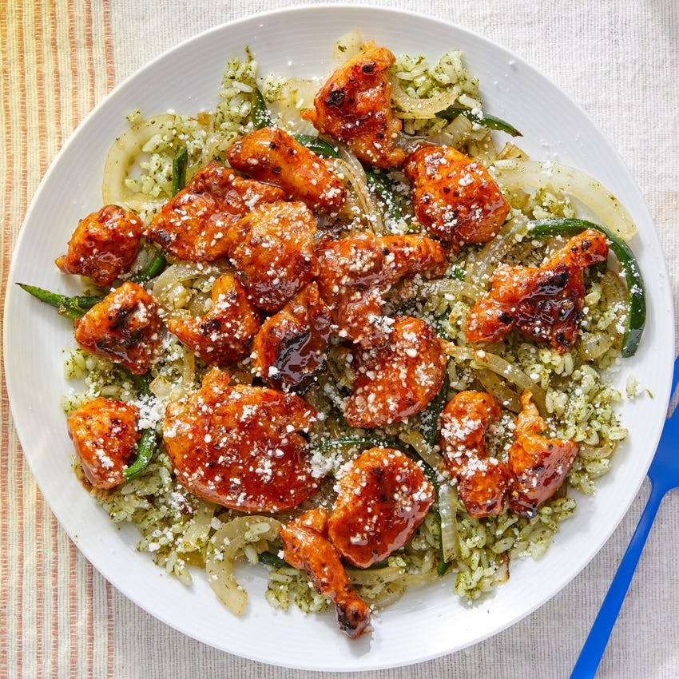

Creamy Chipotle Chicken

with Cilantro Rice & Cotija Cheese
Verdant cilantro sauce (which also features onions, garlic, jalapeño, and lime juice) lends bold, herbaceous flavor to sautéed vegetables and rice—a satisfying accompaniment to bites of tender chicken dressed with a delightfully spicy-sweet chipotle mayo.
Ingredients
- 10 oz Boneless Chicken Breast Pieces
- 1/2 cup Long Grain White Rice
- 1/4 cup Cornstarch
- 2 Tbsps Grated Cotija Cheese
- 2 Tbsps Mayonnaise
- 1 Poblano Pepper
- 2 tsps Chipotle Chile Paste
- 1 Yellow Onion
- 1/4 cup Cilantro Sauce
- 2 tsps Honey
Instructions
- Carefully rinse the rice (sifting through for any impurities). Drain thoroughly. In a medium pot, combine the rice, a big pinch of salt, and 1 cup of water. Heat to boiling on high. Once boiling, reduce the heat to low. Cover and cook, without stirring, 13 to 15 minutes, or until the water has been absorbed and the rice is tender. Turn off the heat and fluff with a fork. Cover to keep warm.
- Meanwhile, wash and dry the fresh produce. Halve, peel, and thinly slice the onion. Cut off and discard the stem of the pepper. Halve lengthwise; remove the ribs and seeds, then thinly slice crosswise. Thoroughly wash your hands immediately after handling. Combine the sliced onion and sliced pepper in a bowl. In a large bowl, whisk together the mayonnaise, honey, 1 teaspoon of warm water, and as much of the chile paste as you’d like, depending on how spicy you’d like the dish to be.
- Pat the chicken dry with paper towels; place in a bowl. Season with salt and pepper. Add the cornstarch and toss to coat. In a medium pan (nonstick, if you have one), heat a thin layer of oil on medium-high. Once the oil is hot enough that a pinch of cornstarch sizzles immediately when added, add the coated chicken in an even layer (discarding any excess cornstarch). Cook, without stirring, 3 to 4 minutes, or until lightly browned. Continue to cook, stirring frequently, 3 to 4 minutes, or until browned and cooked through. Leaving any browned bits (or fond) in the pan, transfer to the bowl of sauce; stir to coat. Taste, then season with salt and pepper if desired.
- In the pan of reserved fond, heat a drizzle of olive oil on medium-high until hot. Add the sliced onion and pepper; season with salt and pepper. Cook, stirring occasionally, 5 to 7 minutes, or until lightly browned and softened. Add 2 tablespoons of water (carefully, as the liquid may splatter). Cook, stirring frequently, 30 seconds to 1 minute, or until the water has cooked off. Turn off the heat. Transfer to the pot of cooked rice; add the cilantro sauce and stir to combine. Taste, then season with salt and pepper if desired. Serve the finished rice topped with the dressed chicken. Garnish with the cotija. Enjoy!